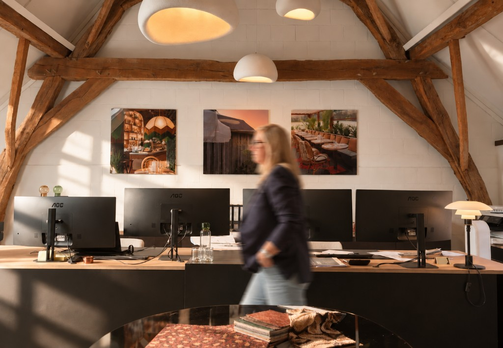
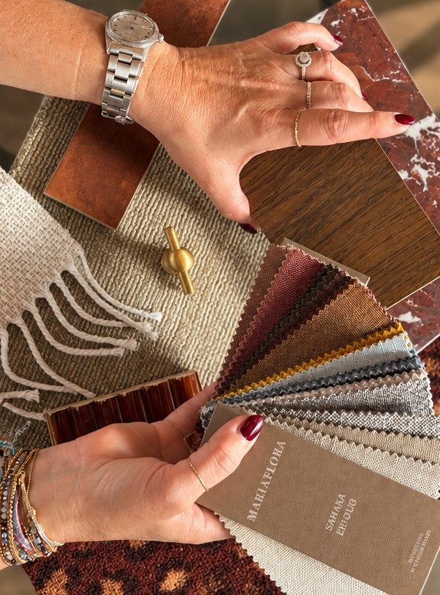
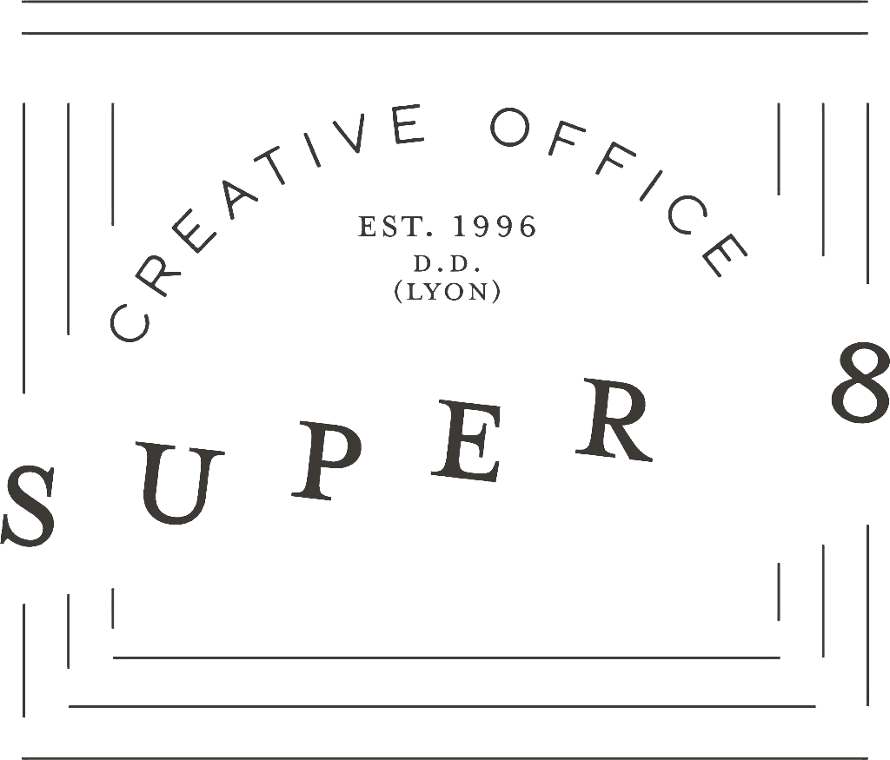

Rencontre
On écoute le lieu, vos usages et l'ambiance que vous souhaitez.

Inside Mood est un bureau d'architecture et d'architecture d'intérieur. Établissements publics, magasins, rénovation, extension et construction de maisons sont pensés dans un même geste, entre charme d'époque et langage d'aujourd'hui.

Chez Inside Mood, nous sommes avant tout une équipe. Des sensibilités, des idées et des regards différents qui se rencontrent pour donner naissance à des espaces singuliers.
Nous avons une véritable passion pour les matières, les textures, les volumes et les univers. Mais au-delà de l’esthétique, nous aimons surtout comprendre ce qui donne du sens à un lieu. Chaque choix est réfléchi : une matière pour sa texture, une lumière pour son ambiance, une circulation pour son usage, un détail pour son caractère.
Nous concevons des intérieurs où l’esthétique et la fonctionnalité se répondent, où rien n’est laissé au hasard et où chaque élément trouve naturellement sa place.
Notre force réside dans cette approche collective : échanger, questionner, confronter nos idées et aller plus loin ensemble pour créer des espaces qui ne sont pas seulement beaux, mais qui vous ressemblent, qui racontent quelque chose et qui sont pensés pour durer.
Avant · Après
Faites glisser le curseur pour passer du projet dessiné au lieu réalisé.
Prochainement…
Comment nous travaillons
Une mission suivie du premier échange jusqu'au lieu habité.
On écoute le lieu, vos usages et l'ambiance que vous souhaitez.
L'architecte d'intérieur et les architectes dessinent ensemble les premières propositions.
Matières, lumière, plans et détails se précisent pour un ensemble cohérent.
Nous coordonnons tous les corps de métier, jusqu'à la livraison.
Le bureau
Les questions fréquentes
Est-ce qu’une architecte d’intérieur coûte cher ?
Faire appel à une architecte d’intérieur représente un investissement, mais un projet bien préparé peut aussi permettre de réaliser des économies. Une réflexion menée en amont permet d’anticiper les détails, d’éviter les erreurs et les modifications coûteuses en cours de chantier.
Une architecte d’intérieur doit-elle toujours tout changer ?
Non. L’objectif n’est pas de remplacer systématiquement ce qui existe, mais de valoriser l’existant lorsque cela est pertinent et de transformer uniquement ce qui doit l’être. Chaque élément est étudié pour trouver le juste équilibre entre conservation, transformation et nouveauté.
Une architecte d’intérieur intervient-elle uniquement sur une maison entière ?
Non. Une architecte d’intérieur peut intervenir sur une seule pièce, plusieurs espaces ou un projet complet. L’accompagnement s’adapte à vos besoins, à votre projet et au niveau d’intervention souhaité.
Peut-elle travailler avec les meubles que je possède déjà ?
Oui. Les meubles existants peuvent parfaitement être intégrés à un nouveau projet lorsqu’ils correspondent à l’espace et à vos besoins. L’objectif est de créer une harmonie entre l’existant, les nouvelles pièces et les éléments sur mesure.
La lumière naturelle suffit-elle pour bien éclairer un intérieur ?
Pas toujours. Un projet lumineux repose sur un équilibre entre lumière naturelle et éclairage artificiel. Différentes sources peuvent être pensées selon les usages : éclairage général, fonctionnel ou décoratif.
Une architecte d’intérieur peut-elle m’aider à respecter mon budget ?
Oui. Son rôle est aussi de vous accompagner dans vos choix afin de maîtriser votre budget. Définition des priorités, choix des matériaux, comparaison des solutions… chaque décision est réfléchie pour construire un projet cohérent avec vos moyens.
Si j’ai déjà un plan de ma maison, ai-je besoin d’une architecte d’intérieur ?
Un plan constitue une excellente base, mais il ne suffit pas toujours à optimiser un intérieur. Une architecte peut repenser l’implantation, les circulations, les volumes et les usages afin d’adapter réellement l’espace à votre mode de vie.
Deux pièces de même taille peuvent-elles nécessiter des aménagements différents ?
Absolument. La surface ne fait pas tout. La circulation, les ouvertures, la lumière, les contraintes techniques et le mode de vie influencent directement la manière dont un espace doit être aménagé.
Dois-je savoir exactement ce que je veux avant de contacter une architecte ?
Pas du tout. Quelques photos, des inspirations Pinterest, des envies ou même simplement « Je veux que ma maison soit plus agréable » peuvent suffire pour commencer. C’est justement le rôle de l’architecte d’intérieur de transformer vos envies et vos besoins en un projet cohérent et personnalisé.
Combien coûtent les services d’une architecte d’intérieur ?
Le tarif dépend de la nature et de l’ampleur de la mission. Les honoraires peuvent prendre la forme d’un forfait pour un dossier, d’un tarif horaire, d’une mission complète ou d’un pourcentage du montant des travaux. Chaque projet étant différent, nous définissons ensemble la formule la plus adaptée à vos besoins et à votre budget.
Distrinox
LMD concept- Menuiserie
Garnisseur Goutière
King's Shop
MCH.concept -Quincaillerie
NNC-Construction
aristide
Hoornaert Olivier - Géomètre expert et architecte

Super 8
H.LEGRAIN-store
DMI.floor